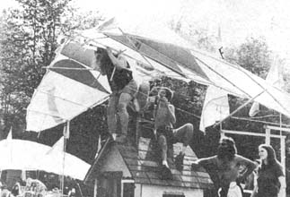

photos by: Cass Wester
Les Walker and Robert Mangurian-both professors of design at City College in New York-got so dadgummed frustrated trying to teach architecture students with paper models instead of genuine full-scale constructions . . . that they decided to do something about it. That "something" turned out to be Whiz Bang Quick City, an instant town of mostly cardboard domes and polyethylene inflatables erected for four days near Woodstock, New York in April of 1971. The freewheeling project worked so well that Les and Rob (and a vastly expanded merry band) were back again this year from May 26 to June.4 with Whiz Bang Quick City 2.
Now WBQC 2 was not your ordinary small town. Lord knows. It was more like The Swiss Family Robinson Meets The Illegitimate Children Of Jules Verne. You know, all self-sufficient and do-it-yourself . . . but in a way that it's never been done before. Or to put it in other words: the folks who inhabited WBQC 2 were all good people and true . . . but just delightfully daft enough to turn a dead-serious design conference into a nineday frolic.
But then, what can you expect? Living for over a week in an instant village of 20 or 30 geodesic domes, inflatables, stretched fabric forms, foamed dwellings, a traditional Plains Indian tipi, bamboo towers and parachute tents is heady stuff, fells. Especially when your own media freaks are circulating with TV monitors, video tapes and Radio WBQC-AM-brought in all the way from Yonkers especially for the occasion-to document the whole happening. It's a wonder the local constabulary didn't surround the entire event, cart off the complete cavorting crowd-dogs and all-and lock 'em up for loonies.
Well, not really. Because, as any fool could plainly see, this mini-Woodstock Nation was clearly a portent of the Abundant Life For All that Bucky Fuller and other seers keep telling us is just around the corner. And the atmosphere, the incredible atmosphere of sharing and cooperation! Who could possibly gaze out over the mellow men and maids camped on WBQC's three amazing meadows . . . and not catch at least a glimpse of Better Times ahead?
That glimpse was brought to Planet Earth this year by Les and Rob and a few helpers. The American Federation of the Arts, Educational Facilities Laboratory, New York State Council on the Arts and CCNY-to be specific-kicked in grant money amounting to a total of $3,500. Anon Shoener had a lot to do with those grants . . . and other funds set aside to partially finance WBQC for some years to come.
And let's hear it for Walter Urban and Mike Ernest who leased WBQC's site-the whole shebang, including three meadows and a pond-to Les and Rob for the magnificent sum of $1.00 (worth roughly 37 cents in these inflated times).
Not forgetting for the nonce, of course, that the powers-that-be in nearby Phoenicia, New York passed a special ordinance to make the gathering all very legal and official. A right neighborly gesture, we'd say, and one that should be noted far and wide.
Now at this point-unfortunately-our communications-regrettably-begin to-we hate this-break down. We know that many other energetic individuals helped to make WBQC 2 the satisfying and sparkling success it was . . . but, thanks to the warm and informal "either a first or a last name but seldom both" basis of the event . . . well, we just ain't gonna be able to give complete credit where credit is due. Credit to folks like Pedro, who was responsible for parties and the bridges that connected the meadows . . . and Davidson, who oversaw the parking of vehicles . . . and the steering committee (known collectively only as the "Garbage Board") . . . and a lot of others.
As a matter of deplorable fact, we're still so high from WBQC 2 that we can't even remember a fraction of the participants. We can recall a few, though, and-since something is better than nothing at all-well . . .
The School of Visual Arts in New York City set up one of the finest looking free-form fabric structures we've yet seen . . . of 100% stretched nylon donated by DuPont. As luck would have it, the expensive material was browned and weakened by a campfire during the week, but it still hung gracefully attached to two large trees until the day WBQC 2 folded.
ZOME also experienced a Little Bad Luck There when that group's cardboard building collapsed in the rain shortly after it was constructed . . . but (ahem) we won't even mention that.
W.R. Wendell-the chief navigator of DOME EAST-brought 12 fellow domers to WBQC 2, a 30-foot shelter and networks of information to share with one and sundry. The DOME EAST people even kind of sort of hinted that they'd be back next year with a bubble building big enough to cover a tennis court.
And didja see the colorful fabric tend that the Syracuse School of Architecture and some other folks from that university's community erected for use as a 30-people-at-one-time WBQC 2 community kitchen? It was right next to the 18-foot high, 1,200-square-foot air structure that the same group (they called themselves "Membrane") inflated.
The blow-up building cost the Syracuse group $1,500 for materials and took two weeks to weld together with electric equipment. Once the parts were unloaded at Quick City, though, the Syracuse students unrolled, zipped together and raised the bubble structure in a matter of hours.
Membrane's big air house was stabilized by a tension net reinforced with ropes and pinned to the ground with screw anchors . . . while an electrically powered blower fed 4,500 cubic feet of air per minute into the bubble to keep it inflated. (The Syracuse people freely admit that an air structure's constant power requirement is a major disadvantage that remains to be remedied.)
At any rate, Membrane's bubble building did a fine job of housing the Syracuse contingent during the night and made an ideal evening theater for video tape playbacks and light shows.
Up in the second meadow, one of the stars of the Quick City show was the "rotating hyperbolic parabola" tower put together by 20 or more unidentified university students from lengths of bamboo ("well, we had all this bamboo lying around, and. . . "). The 30-foot-high, graceful, hourglass-shaped edifice swayed proudly to its commanding height on Saturday afternoon and-surprisingly, to some bystanders-proved substantial enough to provide a vantage point from which a few daring souls smiled down on WBQC 2.
And leave us not forget the patented vacation house that four young New York Tech designers brought in via VW bus. The total $220 they spent for quarter-inch untempered masonite, six $9 marine canvas hammocks (from Sears), a rope ladder, four 4 x 4's and miscellaneous hardware and accessories looked like a very good investment indeed.
The Gellert Family (owners of Sunbird Kites) probably used Quick City to greatest advantage by selling their newest design (did someone say for $20,000?) right in the big middle of the event. The attractive 37 x 23-foot house-with a soaring roof inspired by one of their kite designs-took five men one long day (10 hours) to assemble. Estimated costs of the shell alone was $1,000 . . . although this particular model was outfitted with everything.
The real Queen Of The Show, in many folks' eyes, though, was the plastic palace inflated by three Cornell University graduates calling themselves Clear Wheely Productions. The huge, 50-foot-diameter, 12-foot-high, donut-shaped air structure of 12 mil polyvinyl fluoride film was anchored at all four "corners" by a membrane pegged to the ground. Two half-horse blowers pumped air into the bubble through big tubes and a double-door, airlock entrance kept it there. The light shows featured nightly in the building could be seen inside, from the tubes and by folks strolling past.
Clear Wheely's inflatable was glue-seamed together in two to three weeks and erected on Quick City's grounds by eight people in six hours. It's designers say they'll demonstrate the structure anywhere in the country.
Then again, WBQC 2 was more than just designs and structures. It was individuals and communes and workshop seminars and Pete Seeger and a Memorial Day parade of 700 radiant souls with a 270-member kazoo band. It was film makers, farmers, video freaks and a group known as the Better Days Prospectors whose Big Number featured a goggled and parachuted member of their troup soaring (?) off Snoopy's doghouse on gossamer (well, OK . . . plastic and cardboard) wings. It was Good Times!
|
just makin' a scene at WBQC 2 |
Membrane's air house |
sauna |
|
free-form fabric structure, cloth-covered dome and Gellert Family house |
New York Tech student's vacation house |
sauna, tipi and tower at WBQC 2 |
|
inside Clear Wheely's donut |
 into the air, junior birdman |
|